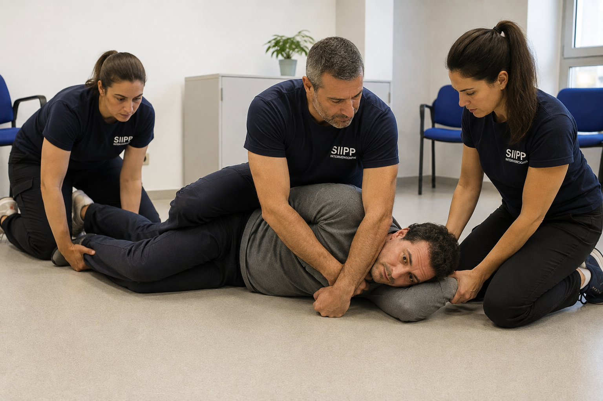
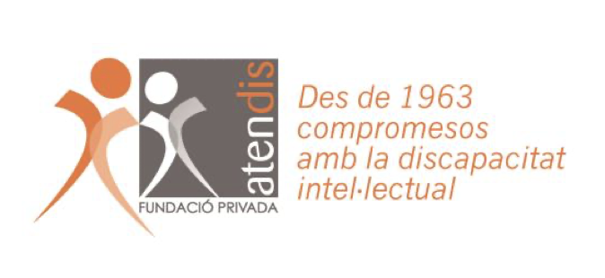
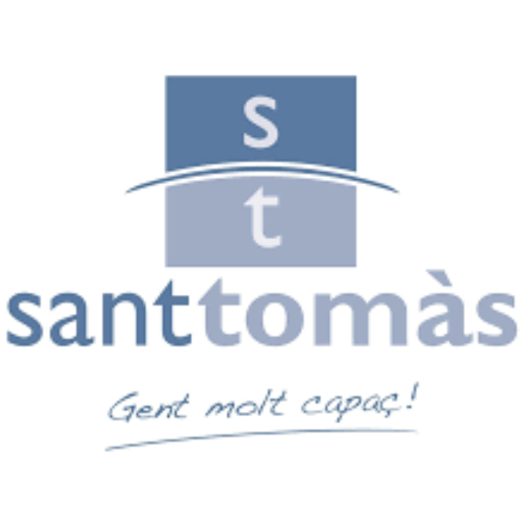
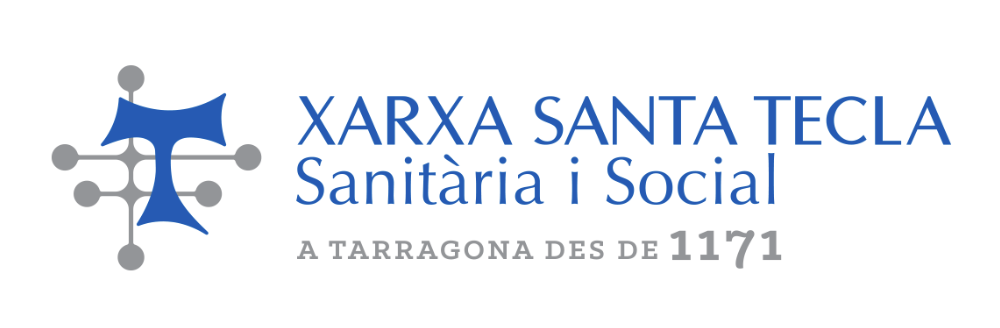

La regulación del profesional es el punto de partida de toda intervención.
El SIIPP forma a vuestros equipos para conservar calidad de percepción, decisión y acción cuando la presión aumenta. Formación bonificable por FUNDAE, ya aplicada en varias entidades del tercer sector.


La calidad asistencial se sostiene en la regulación de los profesionales que intervienen.
Un enfoque nacido de la psicología y de más de 20 años de práctica marcial aplicada a la regulación bajo presión.
El SIIPP sitúa la regulación psicofísica del profesional en el centro de la intervención. Cuando el profesional preserva su capacidad de percibir, decidir y actuar bajo presión, la intervención gana precisión y se facilita la corregulación con la persona atendida.
Profesionales más disponibles.
La regulación amplía la disponibilidad corporal y cognitiva para mantener precisión de lectura y capacidad de respuesta durante toda la intervención.
Equipos más coherentes.
Compartir un mismo marco de intervención facilita la coordinación, refuerza la confianza entre profesionales e incrementa la consistencia de las decisiones.
Intervenciones de calidad.
La regulación del profesional preserva la calidad de la intervención incluso en las situaciones de máxima exigencia.
La regulación del profesional incide en el funcionamiento de la organización.
Cuando los profesionales preservan su capacidad de decisión, aumenta la calidad asistencial, mejora la coordinación de los equipos y se refuerza la seguridad de la intervención.
Coordinación
Un lenguaje común entre profesionales que reduce errores en las intervenciones en equipo.
Menos bajas y lesiones
Profesionales con más capacidad para sostener la intervención bajo presión, con menos accidentes laborales.
Menos rotación
Equipos que no se marchan por inseguridad ante situaciones de intervención.
Menos riesgo legal
Intervenciones proporcionadas y documentables, que reducen el riesgo de denuncias por mala praxis.
Imagen institucional
Un trato respetuoso con los usuarios que protege la reputación del centro.
Cada intervención comienza en el estado del profesional.
Cada organización tiene una realidad propia. El SIIPP se adapta al contexto, acompaña a los equipos y facilita la integración de los aprendizajes en la práctica cotidiana.
La calidad de una intervención física comienza antes del contacto.
El Método de Contención Respetuosa integra la intervención física dentro del Sistema Integral de Intervención Psicofísica. El rigor técnico se acompaña de una calidad de decisión que sostiene la coherencia asistencial durante todo el proceso.

Necesidad
Cada intervención responde a una lectura continuada de la situación y a una necesidad asistencial identificada por el profesional.
Proporcionalidad
La contención evoluciona con la situación. Intensidad, duración y recursos se ajustan continuamente para mantener la calidad asistencial.
Último recurso
La contención física forma parte del sistema cuando constituye la respuesta que mejor preserva la seguridad y la calidad de la intervención.
Restauración
El proceso concluye con la recuperación progresiva de la organización del profesional, del usuario y del entorno, favoreciendo la continuidad asistencial.
La contención física forma parte de la intervención. La calidad de la decisión determina cómo se desarrolla esta actuación.
Un sistema desarrollado y validado en contextos reales de intervención.
Más de 1000 profesionales han sido formados en organizaciones del tercer sector aplicando los principios que hoy conforman el SIIPP.


